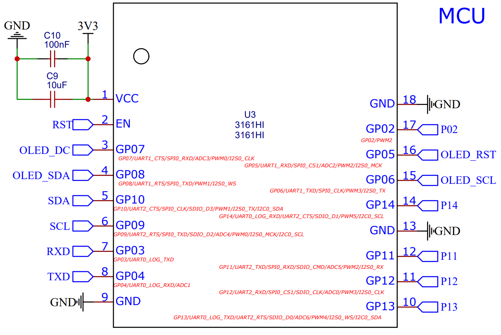
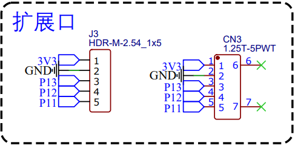
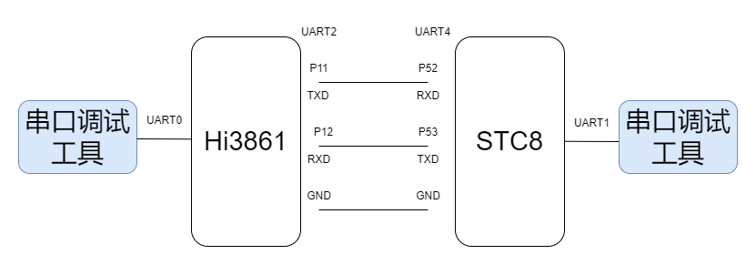

<!DOCTYPE lake>
<h2 data-lake-id="rDKhl" id="rDKhl"><span data-lake-id="u83d8affa" id="u83d8affa">学习目标</span></h2><ul list="u581cb616"><li data-lake-id="uc2557659" fid="u4bdee03d" id="uc2557659"><span data-lake-id="u674e7bed" id="u674e7bed">掌握串口的代码编写和调试</span></li></ul><h2 data-lake-id="H2jL3" id="H2jL3"><span data-lake-id="u6a4e9f38" id="u6a4e9f38">学习内容</span></h2><h3 data-lake-id="Tmbh5" id="Tmbh5"><span data-lake-id="u7993c269" id="u7993c269">串口</span></h3><p data-lake-id="u0d4e067e" id="u0d4e067e"></p><ul list="u73593f0d"><li data-lake-id="uc525e64b" fid="ua5e65cf4" id="uc525e64b"><span data-lake-id="u425f8465" id="u425f8465">P11为Uart2_TXD</span></li><li data-lake-id="u8d799842" fid="ua5e65cf4" id="u8d799842"><span data-lake-id="ua25a98e8" id="ua25a98e8">P13为Uart2_RXD</span></li></ul><h4 data-lake-id="ChnTl" id="ChnTl"><span data-lake-id="u1873aaf4" id="u1873aaf4">案例设计</span></h4><ol list="u82458a54"><li data-lake-id="u968b6409" fid="u84717b2c" id="u968b6409"><span data-lake-id="ud625c54c" id="ud625c54c">Hi3861的串口2（Uart2）和STC8的串口进行通讯</span></li><li data-lake-id="u73a33dca" fid="u84717b2c" id="u73a33dca"><span data-lake-id="u59316849" id="u59316849">HI3861的串口2定时发送消息给STC8</span></li><li data-lake-id="u76c3e905" fid="u84717b2c" id="u76c3e905"><span data-lake-id="ua9bdebab" id="ua9bdebab">HI3861的串口2收到消息后，通过printf输出到控制台。</span></li></ol><h4 data-lake-id="ktnsE" id="ktnsE"><span data-lake-id="u9ac2c3fa" id="u9ac2c3fa">串口初始化</span></h4><span class="yuque-card-unsupported">[codeblock]</span><h4 data-lake-id="lSmBq" id="lSmBq"><span data-lake-id="ud927a835" id="ud927a835">开发流程</span></h4><p data-lake-id="u50cea6f7" id="u50cea6f7"><span data-lake-id="udb86a021" id="udb86a021">来到应用开发的</span><strong><span data-lake-id="u5f5bb35f" id="u5f5bb35f">根目录。</span></strong></p><p data-lake-id="u369321a4" id="u369321a4"><span data-lake-id="u2fcc4a8f" id="u2fcc4a8f">我们编写代码的</span><strong><span data-lake-id="u69621125" id="u69621125">根目录</span></strong><span data-lake-id="u578c9e71" id="u578c9e71">为</span><code data-lake-id="uc04e0e93" id="uc04e0e93"><span data-lake-id="u4fa7694c" id="u4fa7694c">device/board/itcast/genkipi/app</span></code><span data-lake-id="u557efe63" id="u557efe63">。</span></p><ol list="u29de034c"><li data-lake-id="ub3d84f44" fid="u3177aa8f" id="ub3d84f44"><strong><span data-lake-id="u1fcc05e0" id="u1fcc05e0">根目录</span></strong><span data-lake-id="uf2dbe35c" id="uf2dbe35c">下新建</span><code data-lake-id="u1dfee588" id="u1dfee588"><span data-lake-id="u0cc616e6" id="u0cc616e6" style="color: rgb(54, 70, 78); background-color: rgb(245, 245, 245)">uart_demo</span></code><span data-lake-id="u8cc8ee95" id="u8cc8ee95" style="color: rgb(54, 70, 78); background-color: rgb(245, 245, 245)">文件夹，此为</span><strong><span data-lake-id="u52c3ef5f" id="u52c3ef5f" style="color: rgb(54, 70, 78); background-color: rgb(245, 245, 245)">项目目录</span></strong><span data-lake-id="u5a787b9d" id="u5a787b9d" style="color: rgb(54, 70, 78); background-color: rgb(245, 245, 245)">。</span></li><li data-lake-id="u36e1eeca" fid="u3177aa8f" id="u36e1eeca"><span data-lake-id="u572147bc" id="u572147bc" style="color: rgb(54, 70, 78); background-color: rgb(245, 245, 245)">此</span><strong><span data-lake-id="uac405abd" id="uac405abd" style="color: rgb(54, 70, 78); background-color: rgb(245, 245, 245)">项目目录</span></strong><span data-lake-id="u2ae7e7f2" id="u2ae7e7f2" style="color: rgb(54, 70, 78); background-color: rgb(245, 245, 245)">下新建</span><code data-lake-id="u056996bb" id="u056996bb"><span data-lake-id="u046af225" id="u046af225" style="color: rgb(54, 70, 78); background-color: rgb(245, 245, 245)">main.c</span></code><span data-lake-id="u99a1c783" id="u99a1c783" style="color: rgb(54, 70, 78); background-color: rgb(245, 245, 245)">文件</span></li><li data-lake-id="u1b3f37ec" fid="u3177aa8f" id="u1b3f37ec"><span data-lake-id="u623ed7ef" id="u623ed7ef" style="color: rgb(54, 70, 78); background-color: rgb(245, 245, 245)">此</span><strong><span data-lake-id="ua763e567" id="ua763e567" style="color: rgb(54, 70, 78); background-color: rgb(245, 245, 245)">项目目录</span></strong><span data-lake-id="ue7d05019" id="ue7d05019" style="color: rgb(54, 70, 78); background-color: rgb(245, 245, 245)">下新建</span><code data-lake-id="u16f26963" id="u16f26963"><span data-lake-id="u6ab771c1" id="u6ab771c1" style="color: rgb(54, 70, 78); background-color: rgb(245, 245, 245)">BUILD.gn</span></code><span data-lake-id="ud73b704a" id="ud73b704a" style="color: rgb(54, 70, 78); background-color: rgb(245, 245, 245)">文件</span></li><li data-lake-id="u4ef0faff" fid="u3177aa8f" id="u4ef0faff"><span data-lake-id="u27e873ed" id="u27e873ed" style="color: rgba(0, 0, 0, 0.87)">修改</span><strong><span data-lake-id="ucef697da" id="ucef697da" style="color: rgba(0, 0, 0, 0.87)">根目录</span></strong><span data-lake-id="u4229f8f3" id="u4229f8f3" style="color: rgba(0, 0, 0, 0.87)">下的</span><code data-lake-id="uc159067c" id="uc159067c"><span data-lake-id="uf97bc664" id="uf97bc664" style="color: rgba(0, 0, 0, 0.87)">BUILD.gn</span></code><span data-lake-id="u7e36aa92" id="u7e36aa92" style="color: rgba(0, 0, 0, 0.87)">文件</span></li></ol><h4 data-lake-id="pbSC0" id="pbSC0"><span data-lake-id="uf1d04561" id="uf1d04561" style="color: rgba(0, 0, 0, 0.87)">代码部分</span></h4><span class="yuque-card-unsupported">[codeblock]</span><span class="yuque-card-unsupported">[codeblock]</span><span class="yuque-card-unsupported">[codeblock]</span><h4 data-lake-id="AnKQp" id="AnKQp"><span data-lake-id="u5d44db2b" id="u5d44db2b" style="color: rgba(0, 0, 0, 0.87)">校验方式</span></h4><p data-lake-id="u14eec32e" id="u14eec32e"><span data-lake-id="u794698a2" id="u794698a2">接线：</span></p><p data-lake-id="ud448ba97" id="ud448ba97"></p><p data-lake-id="u5956dee8" id="u5956dee8"><span data-lake-id="u8c8e239b" id="u8c8e239b">通过串口调试工具，测试两端是否联通。</span></p><p data-lake-id="u368dde91" id="u368dde91"><br/></p><h2 data-lake-id="V42hf" id="V42hf"><span data-lake-id="ufa1788bc" id="ufa1788bc">练习题</span></h2><ul list="ud49ccbea"><li data-lake-id="ua96619ed" fid="ub882dd1b" id="ua96619ed"><span data-lake-id="ubefa7346" id="ubefa7346">调试不同芯片间的串口</span></li></ul>